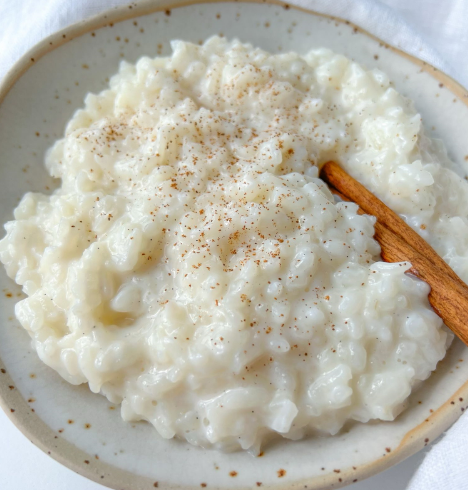

Thomas A. Edison CTE HS
Web Devt. Class
(Lab 3: Make a Recipe)
Sharena Sharif
10.17.2023
Recipe to Rice Pudding / Arroz con Leche!
Rice pudding is made by cooking a creamy combination of rice and milk until it is thick and soft. Rice pudding may include flavors like cinnamon, vanilla, and raisins, to make rice pudding.
For meals or desserts, many varieties are employed. It might be salty or sweet. Rice pudding is thickened with an egg, sweetened with sugar, and enhanced with vanilla in this raisin-studded treat.
A sweet, thickened delicacy made with rice, milk, and eggs, much like tapioca. A flexible food that may be served hot or cold, rice pudding frequently has almonds or dried fruit.

(Photo by Christin Mahrlig - spicysouthernkitchen - CC0)
Buy the INGREDIENTS for Arroz con Leche! (Rice Pudding)
| Ingredient |
Measurement |
| Whole Milk |
Six divided cups (6) |
Sugar |
Half a cup (1/2) |
Salt |
Half teaspoon (1/2) |
White Rice (LONG GRAIN) |
Half a cup (1/2) |
It's completely optional, but you may include ground cinnamon for a finishing touch.
Instructions
- Combine 5 1/2 cups milk, sugar, and salt in a big pot. Heat to a rolling boil over medium-high.
- Add the rice and turn the heat down to low. Make sure the temperature is set to a slow simmer.
- Cook for 50 to 60 minutes, stirring every few minutes. The mixture should become thick enough to resemble yogurt.
- Remove from heat after it has thickened, then mix in vanilla.
- Refrigerate after letting cool. Just before serving, the remaining 1/2 cup of milk is swirled in. Adding cinnamon is optional.